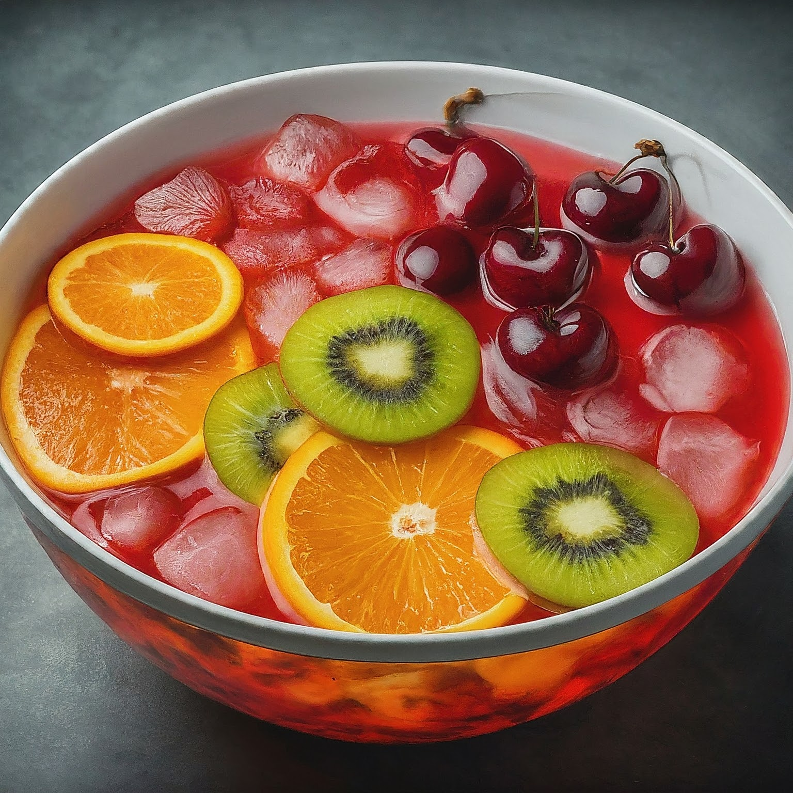

Fruit Punch
Ingredients:
2 cups fruit juice (a combination of your favorites, like orange, pineapple, grape, or cranberry)
1 cup water (or club soda for a fizzy version)
1/2 cup sugar (or to taste)
1 lemon, sliced
1 lime, sliced
Optional: Fresh fruit slices (berries, oranges, kiwi, etc.)
Instructions:
Combine Juices and Water: In a large pitcher, combine the fruit juices and water. You can adjust the ratio depending on your desired sweetness and strength.
Sweeten: Add sugar and stir until it dissolves completely. Taste the mixture and adjust the sweetness to your preference.
Fruit Infusion: Add the sliced lemon and lime. Let the mixture sit for at least 30 minutes (or longer for a more intense citrus flavor).
Chill and Serve: Refrigerate the fruit punch for at least 2 hours, or until well chilled.
Garnish and Enjoy: Strain the fruit punch into serving glasses (optional, to remove the lemon and lime slices). Garnish with fresh fruit slices and ice cubes.
Tips:
Fresh vs. Store-bought Juice: While fresh-squeezed juices offer the best flavor, store-bought juices work perfectly well. Choose juices with no added sugar if you're controlling sweetness.
Spice it Up: Want a little kick? Add a splash of grenadine or a few tablespoons of maraschino cherry juice for a vibrant color and a hint of sweetness.
Frozen Fruit Option: Use frozen fruit instead of fresh slices for a slushy texture. Simply add them to the pitcher with the juices for chilling.
Sparkling Variation: Replace half of the water with club soda for a fizzy fruit punch. Add the club soda just before serving to maintain the fizz.
Alcohol Twist (for Adults): For an adult-friendly version, add a splash of rum, vodka, or champagne to the pitcher (after removing it from the fridge).
This recipe provides a basic framework, so feel free to experiment with different fruits, juices, and flavors to create your perfect homemade fruit punch!